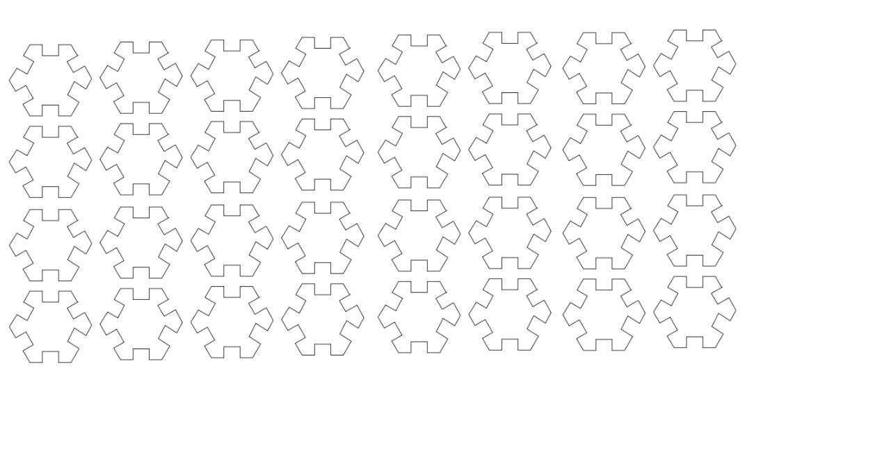
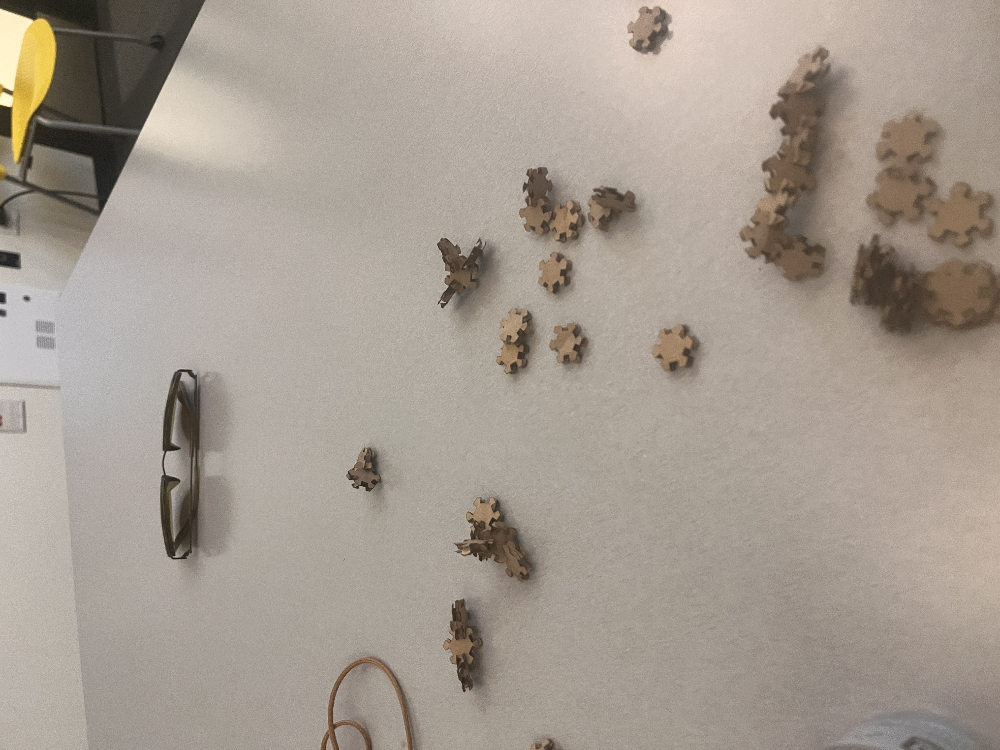
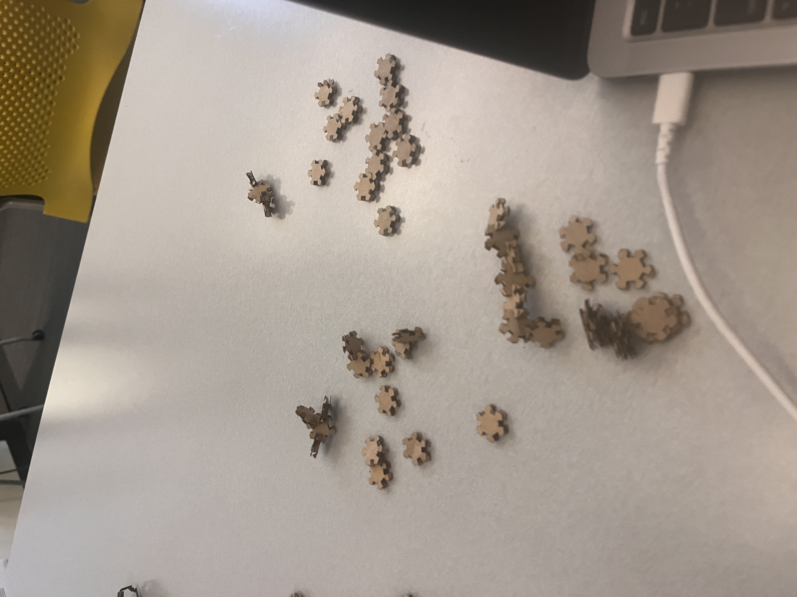
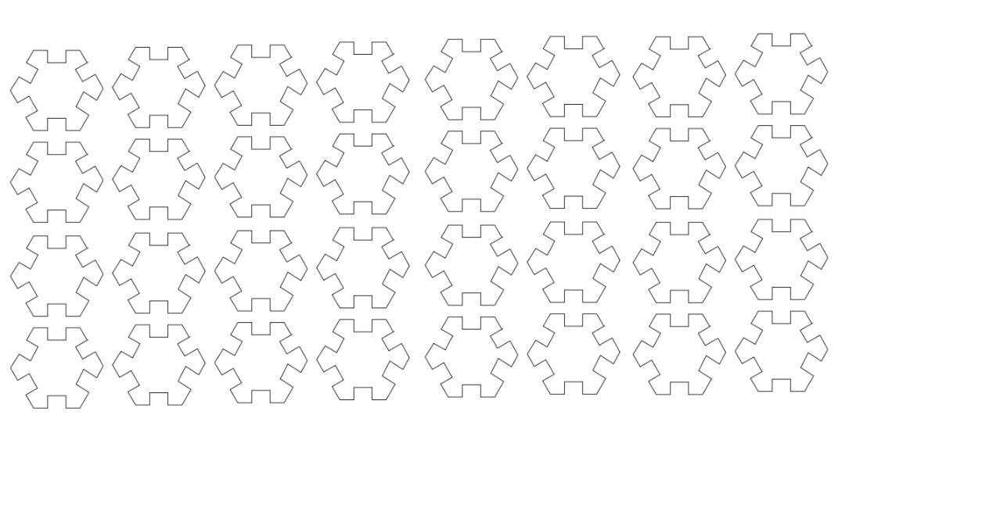
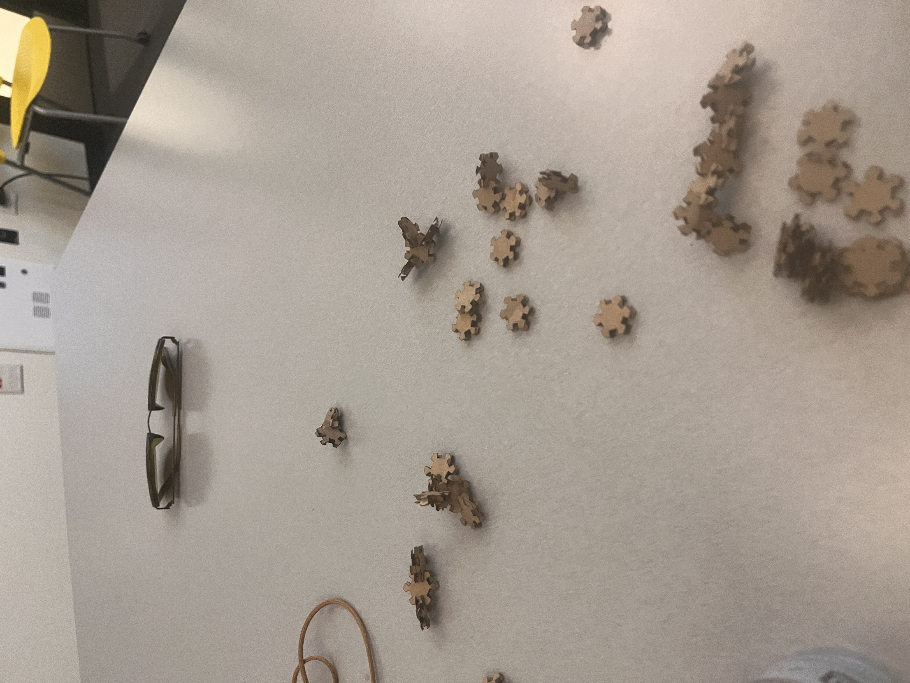
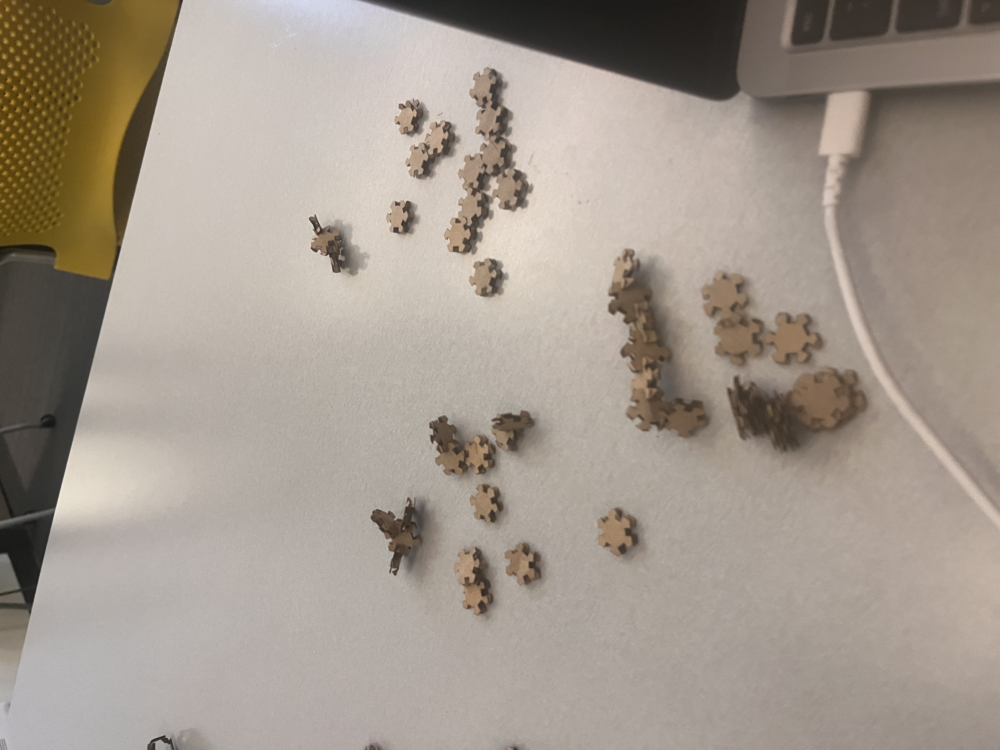

The first assignment in Illustrator was a challenging yet rewarding experience. Inspired by the whimsical designs of my niece's toys, I crafted a gear-like structure, each piece intricately designed. Though initially met with setbacks as the components failed to fit seamlessly, I persevered. Adapting my design, I explored new shapes and dimensions, adding a whimsical touch with a radiant star embellishment. Through this journey, I discovered not only the power of resilience but also a newfound confidence in my creative abilities.
Image Showcase
 




